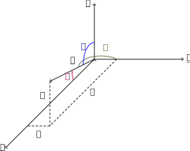

11 Week 11
11.1 Vectors I
A scalar quantity has only size or magnitude. Examples of scalars are mass, time, speed \(\ldots\)
A vector quantity has magnitude and direction, examples are force, velocity acceleration, moment, \(\ldots\)
A vector is represented graphically by a straight line with an arrowhead showing its direction. Often the line is drawn to scale so that the magnitude of the vector may be determined by measuring its length. The diagram above shows two ways that vectors are often drawn. To refer to the vector we give it a name. There are many different methods used to indicate that we are referring to a vector quantity. The vector above will often be referred to in books as \(\underline{OP}\) or \(\underline p\) or \(\vec{p}\). The point at which a vector starts is called the initial point. The point at which it ends is called the final point.
Sometimes we are only interested in the magnitude of the vector. In this case we show that we are considering the magnitude only by writing, for example \(|\underline{OP}|\). The vertical lines are called modulus lines and can be used with any of the ways of the different ways of writing a vector. So the vector \(\underline{OP}\) has a length (or magnitude) \(|\underline{OP}|\).
We can multiply a vector by a positive scalar (or ordinary number). This has the effect of leaving the direction the same, but changing the magnitude. For example, below we have the vectors \(\underline a\) and \(3\underline a\). Note that \(3\underline a\) is parallel to \(\underline a\) (has the same direction) but is \(3\) times as long. Multiplication by a negative scalar turns the vector around through \(180^\circ\). A position vector indicates the distance and direction that we have to travel from the origin to get to a point. In the diagram below, if \(O\) is the origin then \(\underline{OP}\) is the position vector of the point called \(P\). \(\underline{PQ}\) is called a displacement vector. It shows the distance and direction that we have to travel from \(P\) to get to \(Q\). \(\underline{OQ}\) is the position vector of the point \(Q\). Position vectors always refer to the position of a point relative to the origin. Displacement vectors refer to the position of any point relative to any other.
11.1.1 Vector Algebra
We have already seen that a vector may be multiplied by a scalar. If the scalar is positive this changes the magnitude but not the direction of the vector. If the scalar is negative the vector is turned around through \(180^\circ\) and the magnitude is changed.
Two vectors \(a\) and \(b\) are equal if they have the same magnitude and the same direction. They do not actually have to start and finish at the same point. In the above diagram, \(\underline a= \underline b = \underline c\).
If a vector \(\underline b\) has the same magnitude as vector \(\underline a\), but points in the opposite direction then \(\underline b = -\underline a\). Again it doesn’t matter whether they start and finish at the same point or not.
The sum (or resultant) of two vectors is obtained by placing the initial point of the second vector in the sum at the final point of the first vector in the sum. The sum is then the vector that completes the triangle (i.e. runs from the initial point of the first to the final point of the second). This is called the triangle law of vector addition.
The difference of two vectors is given by \(\underline a + (-\underline b)\), where \(-\underline b\) points in the opposite direction to \(\underline b\). The sum of \(\underline a + (-\underline b)\) is then found from the triangle law above. Hence we write \(\underline a-\underline b = \underline a + (-\underline b)\).
The sum of a set of vectors that form a closed loop is always zero. \(\underline a + \underline b + \underline c + \underline d + \underline e = \underline 0\).
Example 11.1 For the diagram below, state the magnitude of the sum of the vectors \(\underline{AB}\), \(\underline{BC}\), \(\underline{CD}\) and \(\underline{DE}\).
Solution. The sum of all the vectors starts at the initial point of the first vector and ends at the final point of the last vector. This is the vector \(\underline{AE}\). Its magnitude may be written \(|\underline{AE}|\).
If a vector joins two points \(A\) and \(B\), then it is equivalent to any other system of vectors that form a path from \(A\) to \(B\). For example the vector \(\underline{AB}\) shown as a solid line below, is equivalent to the sum of the vectors shown dotted. This fact may be used to solve geometric problems using vectors.
Example 11.2 For the triangle \(ABC\), if \(D\) is the mid-point of \(AB\) show that \[ 2\underline{AB}+3\underline{BC}+\underline{CA} = 2\underline{DC}.\tag{1} \]
Solution. From the triangle \[\begin{align*} \underline{AB}&=2\underline{AD}\tag{2}\\ \underline{BC}&=\underline{BD}+\underline{DC}\tag{3}\\ \underline{CA}&=\underline{CD}+\underline{DA}\tag{4}\\ \end{align*}\] Substituting the equations (2), (3) and (4) for the left-hand side of (1) gives \[ 2\underline{AB}+3\underline{BC}+\underline{CA}=4\underline{AD}+3\underline{BD}+3\underline{DC}+\underline{CD}+\underline{DA}.\tag{5} \] Now \[\begin{align*} \underline{BD}&=-\underline{AD}\tag{6}\\ \underline{CD}&=-\underline{DC}\tag{7}\\ \underline{DA}&=-\underline{AD}\tag{8}\\ \end{align*}\] Substituting these into the right-hand side of equation (5) gives \[ 2\underline{AB}+3\underline{BC}+\underline{CA}=4\underline{AD}-3\underline{AD}+3\underline{DC}-\underline{DC}-\underline{AD}. \] So \[ 2\underline{AB}+3\underline{BC}+\underline{CA} = 2\underline{DC}. \]
11.2 Vectors II
11.2.1 Unit Vectors
A unit vector is a vector with magnitude of 1.
If \(\underline a\) is a vector with magnitude \(|\underline a|\), then a unit vector with the same direction is written \(\hat{\underline a}\) where \(|\hat{\underline a}| = 1\). Notice that \[ \hat{\underline a} = \frac1{|\underline a|}{\underline a}. \] For vector systems, there are three special unit vectors \(\underline i\), \(\underline j\) and \(\underline k\). These vectors for a set of axes for a vector system and are perpendicular to each other (like \(x\), \(y\) and \(z\) in Cartesian notation). Strictly, they should be written \(\hat{\underline i}, \hat{\underline j}\) and \(\hat{\underline k}\) to indicate that they are unit vectors, but they are used so often that the circumflex, \(\hat{}\), tends to get left off. The axis vectors are arranged as a righthand system. This means that a screw turned from \(\underline i\) to \(\underline j\) should travel up the \(\underline k\) axis.
A vector may be resolved in terms of its components in the direction of the unit axis vectors. We shall start by considering a two dimensional vector. For this we need only the \(\underline i\) and \(\underline j\) axes.
The vector \(\underline r\) makes an angle \(\theta\) with the \(\underline i\) axis and has magnitude \(|\underline r| = r\). We may say that to get to the point \(R\), we have to start at the \(\underline i\) axis, turn through an angle \(\theta\) and then travel a distance \(r\) from the origin. Alternatively, we may get to \(R\), by travelling a distance along the \(\underline i\) axis and then a distance up in the direction of the \(\underline j\) axis. The distance to be travelled along the \(\underline i\) axis is \(r\cos(\theta)\) and the distance to be travelled up in the direction of the \(\underline j\) axis is \(r\sin(\theta)\). The vector \(\underline r\) may thus be written as \(\underline r = r\cos(\theta) \underline i + r\sin(\theta)\underline j\).
When written in this form \(\underline r\) is said to be resolved into its component vectors.
A 2D vector may be given in its component form as, for example \(\underline r = 6\underline i + 5\underline j\).
If we have two 2D vectors lying in the same plane, then they are said to be co-planar vectors.
The vectors \(\underline a\) and \(\underline b\) are co-planar.
We may also write 3D vectors in terms of their unit vectors, but this time we need all three axes.
The vector \(\underline r\) projects a length \(a\) onto the \(\underline i\) axis, a length \(b\) onto the \(\underline j\) axis and a length \(c\) onto the \(\underline k\) axis, so \(\underline r\) may be written \(\underline r = a\underline i + b\underline j + c\underline k\).
11.2.2 Vector algebra with component vectors
When a vector is written in terms of its components, then the sum of two vectors is the sum of the components for each direction. e.g. \[ \underline a = 6\underline i + 2\underline j, \underline b = 5\underline i - \underline j\;\text{ so }\;\underline a + \underline b = (6 + 5)\underline i + (2 + (-1))\underline j = 11\underline i + \underline j. \] Note that \(1\underline i, 1\underline j\), or \(1\underline k\) are usually written as just \(i\underline , \underline j\) or \(\underline k\).
Similarly \[ \underline a = 5\underline i + 4\underline j - \underline k, \underline b = 3\underline i - 7\underline j + 8\underline k\;\text{ so }\; \underline a + \underline b = (5+3)\underline i + (4 - 7)\underline j + (-1 + 8)\underline k = 8\underline i -3\underline j + 7\underline k. \]
When a vector is written in terms of components, the difference of the two vectors is the difference of the components for each direction. e.g. \[ \underline a = 5\underline i + 4\underline j - \underline k, \underline b = 3\underline i - 7\underline j + 8\underline k\;\text{ so }\; \underline a - \underline b = (5 - 3)\underline i + (4 - (-7))\underline j + ((-1) - 8)\underline k = 2\underline i + 11\underline j -9\underline k. \] When a vector written in terms of components is multiplied by a scalar, each component is multiplied by that scalar e.g. \[ \underline a = 5\underline i + 4\underline j - \underline k\;\text{ so }\;3\underline a = 15\underline i + 12\underline j - 3\underline k. \]
11.2.3 The magnitude of a vector
The vector \(\underline r = a\underline i + b\underline j\). From Pythagoras’ theorem, the magnitude of vector \(|\underline r| = \sqrt{a^2+b^2}\). In three dimensions, if \(\underline r = a\underline i + b\underline j + c\underline k\), then \(|\underline r| = \sqrt{a^2+b^2+c^2}\).
11.2.4 Finding a unit vector
If \(\underline r = a\underline i + b\underline j + c\underline k\), then its magnitude is \(|r| = \sqrt{a^2+b^2+c^2}\). That is the length of the vector is \(\sqrt{a^2+b^2+c^2}\). If we want to find a vector that has the same direction as \(\underline r\), but has length of 1, i.e. the unit vector \(\underline{\hat r}\), then we must divide \(\underline r\) by its own magnitude. So if \(\underline r = a\underline i + b\underline j + c\underline k\), then \[ \underline{\hat r} = \frac{1}{\sqrt{a^2+b^2+c^2}}(a\underline i+b\underline j+c\underline k) \] which can be written \[ \underline{\hat r} = \frac{a}{\sqrt{a^2+b^2+c^2}}\underline i+\frac{b}{\sqrt{a^2+b^2+c^2}}\underline j+\frac{c}{\sqrt{a^2+b^2+c^2}}\underline k \] or \[ \underline{\hat r} = \frac{a}{|\underline r|}\underline i+\frac{b}{|\underline r|}\underline j+\frac{c}{|\underline r|}\underline k \]
Example 11.3 If \(\underline r = 5\underline i+2\underline j-\underline k\), find a unit vector that is
- parallel to \(\underline r\),
- has the opposite direction to \(\underline r\).
Solution. \(|\underline r| = \sqrt{5^2+2^2+1^2} = \sqrt{25+4+1} = \sqrt{30}\).
- The unit vector in the direction of \(\underline r\) is \[ \underline{\hat r} = \frac5{\sqrt{30}}\underline i+\frac2{\sqrt{30}}\underline j-\frac1{\sqrt{30}}\underline k. \]
- The unit vector in the opposite direction is \[ -\underline{\hat r} = -\left(\frac{5}{\sqrt{30}}\underline i+\frac{2}{\sqrt{30}}\underline j-\frac{1}{\sqrt{30}}\underline k\right) = -\frac{5}{\sqrt{30}}\underline i-\frac{2}{\sqrt{30}}\underline j+\frac{1}{\sqrt{30}}\underline k \]
11.2.5 Direction Cosines
The direction cosines of a vector are the cosines of the angles that that vector makes with each of the three axes. The angles are marked \(\alpha, \beta\) and \(\gamma\) in the figure below  The direction cosines are \[ l = \cos(\alpha) = \frac{a}{|\underline r|},\;\;m = \cos(\beta) = \frac{b}{|\underline r|},\;\;n = \cos(\gamma) = \frac{c}{|\underline r|} \]
Example 11.4 Find the direction cosines of the vector \(\underline r = 3\underline i + 4\underline j - 5\underline k\).
Solution. The magnitude of \(\underline r\) is \(|\underline r| = \sqrt{3^2+4^2+5^2} = \sqrt{9+16+25} = \sqrt{50}\).
The direction cosines of \(\underline r\) are then \[ l = \frac{3}{\sqrt{50}},\;\;m = \frac{4}{\sqrt{50}},\;\;n = \frac{-5}{\sqrt{50}} \]
11.2.6 The angle between two vectors
If we have two vectors \(\underline a\) and \(\underline b\) where \(\underline a\) has direction cosines \(l_a, m_a, n_a\) and \(\underline b\) has direction cosines \(l_b, m_b, n_b\), then the cosine of the angle \(\theta\) between the vectors is given by: \[ \cos(\theta) = l_al_b + m_am_b + n_an_b. \]
Example 11.5 Determine the angle between the two vectors and \(\underline a = 2\underline i + 3\underline j + 4\underline k\) and \(\underline b = 4\underline i - 3\underline j + 2\underline k\).
Solution. \[ |\underline a| = \sqrt{2^2+3^2+4^2} = \sqrt{29},\;\;|\underline b| = \sqrt{4^2+3^2+2^2} = \sqrt{29}. \] So \(\underline a\) has direction cosines \[ l_a = \frac{2}{\sqrt{29}},\;\;m_a = \frac{3}{\sqrt{29}},\;\;n_a = \frac{4}{\sqrt{29}} \] and \(\underline b\) has direction cosines \[ l_b = \frac{4}{\sqrt{29}},\;\;m_b = \frac{-3}{\sqrt{29}},\;\;n_b = \frac{2}{\sqrt{29}} \] The cosine of the angle \(\theta\) between the two vectors is given by \[ \cos(\theta) = \frac{2}{\sqrt{29}}\frac{4}{\sqrt{29}}+\frac{3}{\sqrt{29}}\frac{-3}{\sqrt{29}}+\frac{4}{\sqrt{29}}\frac{2}{\sqrt{29}} = \frac{8}{29}-\frac{9}{29}+\frac{8}{29} = \frac{7}{29}. \] Hence the angle is \(\theta = \cos^{-1}(7/29) = 76^\circ\).
11.3 Vectors III
11.3.1 Multiplication of vectors
We know from studying mechanical systems that there are two possible situations when two vectors are multiplied together. A vector multiplied by a vector can result in a scalar quantity, for example, a force (vector) multiplied by the distance (vector) an object moves as a result of that force gives the amount of work (scalar) done by that force. A vector multiplied by a vector can also result in a vector quantity, for example a force (vector) multiplied by the perpendicular distance (vector) of that force from a given point, gives the moment (vector) of that force about the point. Since there may be two different forms multiplying vectors together, we can deduce that there are two different types of vector multiplication; one that results in a scalar quantity and one that results in a vector quantity.
11.3.2 The scalar or dot product
The scalar product of two vectors has a scalar quantity as its result.
The scalar product of two vectors \(\underline a\) and \(\underline b\) is defined as \[ \underline a \cdot\underline b = |\underline a||\underline b|\cos(\theta) \] where \(\theta\) is the angle between the two vectors as shown below
 If \(\underline a\) and \(\underline b\) are parallel then \(\theta = 0^\circ\) and \(\cos(\theta) = 1\), so \(\underline a \cdot\underline b = |\underline a||\underline b|\).
If \(\underline a\) and \(\underline b\) are parallel then \(\theta = 0^\circ\) and \(\cos(\theta) = 1\), so \(\underline a \cdot\underline b = |\underline a||\underline b|\).
If \(\underline a\) and \(\underline b\) are perpendicular then \(\theta = 90^\circ\) and \(\cos(\theta) = 0\) so \(\underline a \cdot\underline b = 0\).
If \(\underline a\) and \(\underline b\) are given in terms of component vectors as \(\underline a = a_1\underline i + a_2\underline j + a_3\underline k\) and \(\underline b = b_1\underline i + b_2\underline j + b_3\underline k\) then \[ \underline a \cdot\underline b = a_1b_1 + a_2b_2 + a_3b_3. \]
Example 11.6 Find the scalar product of \(\underline a = 3\underline i + 2\underline j - 6\underline k\) and \(\underline b = -\underline i + 5\underline j - \underline k\).
Solution. \[ \underline a\cdot\underline b = a_1b_1 + a_2b_2 + a_3b_3 = (3)(-1)+(2)(5)+(-6)(-1) = -3+10+6=13. \] The scalar product of the vectors is 13.
Now since the scalar product is defined as \[ \underline a \cdot\underline b = |\underline a||\underline b| \cos(\theta)\tag{1} \] it gives us another way of finding the angle \(\theta\) between two vectors. We can re-arrange equation (1) to give \[ \cos(\theta) = \frac{\underline a\cdot\underline b}{|\underline a||\underline b|}.\tag{2} \]
Example 11.7 Using the vectors from the previous example, \(\underline a = 3\underline i + 2\underline j - 6\underline k\) and \(\underline b = -\underline i + 5\underline j - \underline k\), we found that \(\underline a\cdot\underline b = 13\). Also, \(|\underline a| = \sqrt{3^2+2^2+(-6)^2}=\sqrt{49}=7\) and \(|\underline b| = \sqrt{(-1)^2+5^2+(-1)^2} = \sqrt{27}\) so from equation (2) \[ \cos(\theta) = \frac{13}{7\sqrt{27}} = 0.3574 \] and thus \(\theta = \cos^{-1}(0.3574) = 69^\circ\).
Example 11.8 Find the unit vector perpendicular to the vector \(4\underline i+4\underline j-7\underline k\) and to the vector \(3\underline i - 2\underline j+\underline k\)
Solution. Let the vector which is perpendicular to the two given vectors be \(p\underline i + q\underline j + r\underline k\).
If the vectors are perpendicular then the scalar product is zero since the angle between them is \(90^\circ\) so \[ (4\underline i + 4\underline j - 7\underline k) \cdot (p\underline i + q\underline j + r\underline k) = 0\tag{1} \] and \[ (3\underline i - 2\underline j + \underline k) \cdot (p\underline i + q\underline j + r\underline k) = 0.\tag{2} \] Evaluating the scalar products (1) and (2) gives \[\begin{align*} 4p + 4q -7r& = 0\tag{3}\\ 3p - 2q + r& = 0\tag{4} \end{align*}\] We now solve equations (3) and (4) simultaneously \[\begin{align*} 4p + 4q - 7r& = 0&(3)\\ 6p - 4q + 2r& = 0 &(4 \times 2)\\ \end{align*}\] therefore by adding \(10p - 5r = 0\) so \[ r = 2p.\tag{5} \] Substituting into (4) gives \(3p - 2q + 2p = 0\) so \[ q = \frac52p.\tag{6} \] We may choose any value for \(p\) and, provided \(q\) and \(r\) have the relationships (5) and (6) with our chosen value, the vector will be perpendicular to the given vectors. We will choose \(p = 2\), then \(r= 4\) and \(q = 5\) so \[ p\underline i + q\underline j + r\underline k = 2\underline i + 5\underline j + 4\underline k. \] We were asked to find the unit vector. The magnitude of \(2\underline i + 5\underline j + 4\underline k = \sqrt{45} = 3\sqrt{5}\) so the unit vector perpendicular to the given vectors is \[ \frac{2}{3\sqrt{5}}\underline i+\frac{5}{3\sqrt{5}}\underline j+\frac{4}{3\sqrt{5}}\underline k. \]
11.3.3 The vector or cross product
The vector product of two vectors has as its result a vector.
The vector product is defined as \(\underline a \times\underline b = |\underline a||\underline b|\sin(\theta)\underline{\hat n}\).
That is to say that the magnitude of \(\underline a\times\underline b\) is \(|\underline a||\underline b|\sin(\theta)\) where \(\theta\) is the angle between \(\underline a\) and \(\underline b\) and, since it is a vector, it must also have a direction so \(\underline{\hat n}\) indicates the direction. For a vector product, \(\underline {\hat n}\) is always perpendicular to both \(\underline a\) and \(\underline b\). For \(\underline {\hat n}\) to be perpendicular to \(\underline a\) and \(\underline b\), it could either point in the direction shown below, or in the opposite direction, however for a vector product, \(\underline {\hat n}\) always forms a right-hand set of axes (like \(\underline i, \underline j\) and \(\underline k\)). The vector in the opposite direction (shown dotted) would be obtained from \(\underline b\times\underline a\).
If \(\underline a\) and \(\underline b\) are parallel (i.e. \(\theta = 0\)), then since \(\sin(\theta) = 0, \underline a \times\underline b = {\underline 0}\).
If \(\underline a\) and \(\underline b\) are perpendicular (i.e. \(\theta = 90^\circ\)) then since \(\sin(90^\circ)= 1, \underline a \times\underline b = |\underline a||\underline b|\underline {\hat n}\)
If \(\underline a\) and \(\underline b\) are specified in terms of their component vectors, so that \(\underline a = a_1\underline i + a_2\underline j + a_3\underline k\) and \(\underline b = b_1\underline i + b_2\underline j + b_3\underline k\) then \[ \underline a \times\underline b = \left|\begin{array}{ccc}\underline i&\underline j&\underline k\\a_1&a_2&a_3\\b_1&b_2&b_3\\\end{array}\right|. \]
Example 11.9 Find the vector product of \(\underline a=3\underline i+2\underline j-6\underline k\) and \(\underline b=-\underline i + 5\underline j-\underline k\).
Solution. \[\begin{align*} \underline a \times\underline b& = \left|\begin{array}{ccc}\underline i&\underline j&\underline k\\3&2&-6\\-1&5&-1\\\end{array}\right|\\ &= \underline i((2)(-1)-(-6)(5))-\underline j((3)(-1)-(-6)(-1))+\underline k((3)(5)-(2)(-1))\\ &=28\underline i+9\underline j+17\underline k. \end{align*}\]
Example 11.10 Find a unit vector which is perpendicular to the vector \(4\underline i+4\underline j-7\underline k\) and to the vector \(3\underline i - 2\underline j+\underline k\).
Solution. From the definition of the vector product, a vector perpendicular to both these vectors is given by \[\begin{align*} (4\underline i+4\underline j-7\underline k) \times(3\underline i - 2\underline j+\underline k)& = \left|\begin{array}{ccc}\underline i&\underline j&\underline k\\4&4&-7\\3&-2&1\\\end{array}\right|\\ &= \underline i((4)(1)-(-7)(-2))\\ &\phantom{= }-\underline j((4)(1)-(-7)(3))\\ &\phantom{= }+\underline k((4)(-2)-(4)(3))\\ &=-10\underline i-25\underline j-20\underline k. \end{align*}\] So a unit vector perpendicular to both given vectors is \[ \frac{-10}{15\sqrt{5}}\underline i-\frac{25}{15\sqrt{5}}\underline j-\frac{20}{15\sqrt{5}}\underline k = \frac{-2}{3\sqrt{5}}\underline i-\frac{5}{3\sqrt{5}}\underline j-\frac{4}{3\sqrt{5}}\underline k. \]
11.3.4 The scalar triple product
If we have three vectors \(\underline a, \underline b\) and \(\underline c\) then the scalar triple product of those vectors is defined as \(\underline a \cdot(\underline b\times\underline c)\).
Note that the vector product must be evaluated first, then the scalar product.
The scalar triple product gives the volume of a parallelepiped with edges defined by the vectors \(\underline a, \underline b\) and \(\underline c\).
Example 11.11 Find the volume of a parallelepiped with edges \(\underline a = 2\underline i - 3\underline j + 4\underline k, \underline b = \underline i + 2\underline j - \underline k\) and \(\underline c = 3\underline i - \underline j + \underline 2\).
Solution. The volume is given by \(\underline a \cdot(\underline b\times\underline c)\). First we calculate the vector product \[ \underline b \times\underline c = \left|\begin{array}{ccc}\underline i&\underline j&\underline k\\2&-3&4\\3&-1&2\\\end{array}\right| = 3\underline i-5\underline j-7\underline k. \] and now \[ \underline a \cdot(\underline b\times\underline c) = (2\underline i - 3\underline j + 4\underline k)\cdot(3\underline i-5\underline j-7\underline k) = -7. \] The volume is therefore \(7\) units (and the -ve sign tells us that the system was not right handed).
11.3.5 The vector triple product
If we have three vectors \(\underline a, \underline b\) and \(\underline c\) then the vector triple product of those vectors is defined as \[ \underline a \times (\underline b \times\underline c) \]
Example 11.12 Find the vector triple product \(\underline a \times (\underline b \times\underline c)\) where \(\underline a = 2\underline i - 3\underline j + 4\underline k, \underline b = \underline i + 2\underline j - \underline k\) and \(\underline c = 3\underline i - \underline j + \underline 2\).
Solution. From the previous example, \(\underline b \times\underline c = 3\underline i-5\underline j-7\underline k\). \[ \underline a \times (\underline b \times\underline c) = \left|\begin{array}{ccc}\underline i&\underline j&\underline k\\2&-3&4\\3&-5&7\end{array}\right| = 41\underline i+26\underline j-\underline k \]